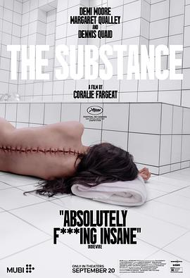

某种物质 / The Substance
又名：完美物质(港) / 惧裂(台) / 实体 / 物质 / 母体
大聪看电影安利的，镜头真是太R级了，把从50岁到30岁的蜕变描绘的这么エロ，虽然也很讽刺就是了。感觉印象里看过一个日本电影和这个挺类似，最后皮肤全部脱落好像，忘掉了名字。
作品信息
| 导演 | 科拉莉·法尔雅 |
| 编剧 | 科拉莉·法尔雅 |
| 主演 | 黛米·摩尔 / 玛格丽特·库里 / 丹尼斯·奎德 / 爱德华·汉密尔顿-克拉克 / 戈雷·阿布拉姆斯 / 奥斯卡·莱斯格 / 克里斯蒂安·埃里克森 / 罗宾·格里尔 / 汤姆·莫顿 / 雨果·迭戈·加西亚 / 丹尼尔·奈特 / 乔纳森·卡雷 / 吉泽尔·亨德科特 / 阿基尔·温盖特 / 比利·本特利 / 文森特·科隆布 / 伦纳德·里德斯戴尔 / 乔丹·福特·西尔弗 / 奥斯卡·萨勒姆 / 薇薇安·波斯纳 |
| 类型 | 剧情 / 恐怖 |
| 制片国家/地区 | 法国 / 英国 / 美国 |
| 语言 | 英语 |
| 上映日期 | 2024-05-19(戛纳电影节) / 2024-09-20(美国) |
| 片长 | 141分钟 |
| IMDb | tt17526714 |
说过什么
2024-10-16 05:48:53
看过 · 时间来自广播，短评来自标记页
大聪看电影安利的，镜头真是太R级了，把从50岁到30岁的蜕变描绘的这么エロ，虽然也很讽刺就是了。感觉印象里看过一个日本电影和这个挺类似，最后皮肤全部脱落好像，忘掉了名字。
2024-10-11 15:08:43
广播 · 想看
最后一次看到是 2026-08-01T11:04:15+10:00 · 豆瓣原页